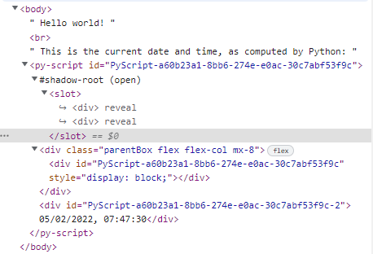
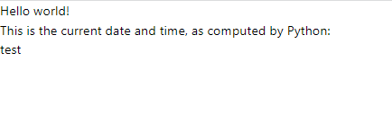

Installation is simple, as noted on the Github repository: clone the repo, cd into the pyscriptjs folder, run npm install and you're good to go. npm run dev starts a live server for playing with code or examples. You can also just include Pyscript via CDN.
Looking at the core part of the hello_world example shows us a few things:
hello_world.html
{{< highlight html>}} Hello world!It seems that, REPL-like, the raw string output of... the final line? Is printed to the sceen. In our case, inside a div with what looks like a UUID:
It seems that this is only true for raw, literal values. That is, adding test_name = "test" to the end of the py-script tag means that nothing is output, but just adding "test" prints test to the screen.
<py-script>
{{< highlight python3>}} from datetime import datetime now = datetime.now() now.strftime("%m/%d/%Y, %H:%M:%S") "test" {{< /highlight >}} Let's look at a slightly more complicated example with the simple clock:
<py-script>
{{< highlight html>}}What's going on here? Well, the static text that is the start time of the program comes from the first py-script tag, again using that "final value is exported as a string" thing we saw before. The second py-script takes care of of the constatntly updating time, as well as printing "It's espresso time!" if the final character in the datetime string is a 0, 4, or 8. We're using asynchio.sleep to handle the timing
Out of curiousity, I replaced await asyncio.sleep(1) with import time and time.sleep(1), and not only does the program not wake up after 1 second to continue running, the entire chrome tab is frozen. I can't even right-click to inspect/view source. And if I try to close it or rfresh the page, I get a "page not responsive" error and the option to kill the process. So time.sleep, it seems, is right out.
Other things I'm noticing - the pyscript.write function, which apparently puts takes an element id and a value, and stuffs the value into a div within that element id. Let's look at the source to see what's actually happening here.
src/pyscript.py
{{< highlight python3 >}} class PyScript: #... @staticmethod def write(element_id, value, append=False, exec_id=0): """Writes value to the element with id "element_id""" console.log(f"APPENDING: {append} ==> {element_id} --> {value}") if append: child = document.createElement('div'); element = document.querySelector(f'#{element_id}'); if not element: return exec_id = exec_id or element.childElementCount + 1 element_id = child.id = f"{element_id}-{exec_id}"; element.appendChild(child); element = document.getElementById(element_id) html, mime_type = format_mime(value) if mime_type in ('application/javascript', 'text/html'): scriptEl = document.createRange().createContextualFragment(html) element.appendChild(scriptEl) else: element.innerHTML = html {{< /highlight >}}So the pyscript.write static method takes an element id and value, as well as two optional arguments. The append argument specifies whether to append the value as an additional div, as the final child of the given element, or simply set the innerHTML of the provided element to the value given. And the exec-id seems to be an index of which child of the given element is being modified, though it's also auto-incremented when appending, so probably one wouldn't set this manually much.
Adding append = True to the final pyscript.write statement behaves as expected:
And since this particular app is built with Svelte and includes tailwind, we can use all the familiar tailwind classes to start formatting the output, to make it a little more clear where our data is coming from. Let's make the first div red, the second green, and the 'espresso time' div blue:
simple_clock.html
{{< highlight html >}}As long as we're in the source, let's see whatever methods and classes live in pyscript.py.
It looks like the PyScript class has only two methods: write and run_until_complete, i.e. loop forever.
There's also the Element class, which seems to be the internal, pythonic representation of a DOM element, with basic write, clear, and select method, as well as a clone(duplciate) method
Finally, there's quite a few functions that appear to deal with the output formatting of various objects based on their MIME types, allowing rendering of objects to the screen.
PyScript.write calls format_mime to get the properly formatted HTML for an object (in theory) before stuffing it into (or appending it to) the targetted element. If the object is a string, it simply returns that string with the MIME type 'text/plain'. Otherwise, the eval_formatter method is called to determine if the object has a print_method attribute.eval_formatter, just returns the objects print_method attribute, if it has one. But if the object's print_method is 'savefig', it stuffs the image into a base64-encoded png and returns that as well. Neat!MIME_RENDERERS dict maps MIME types to functions, some of which are the identity function, and some of which add additional html tags or boilerplate around the contetn so it will display properly. At this point, pyscript.py
{{< highlight python3 "linenostart=22">}} def render_image(mime, value, meta): data = f'data:{mime};charset=utf-8;base64,{value}' attrs = ' '.join(['{k}="{v}"' for k, v in meta.items()]) return f'So, the flow is:
I dug through all this as I was digging into Issue #103 on the PyScript Github, and learned a few things about Python on the way. Namely, print() is pretty much just a wrapper to sys.stdout.write() (or any other file-like object, if specified). And while print() can be called with any number of positional arguments and will send them all to stdout, it does so as individual calls to stdout.writer(). So programs (like PyScript) that interrupt that output to do other things with may get results that look off if they behave differently than the line-o'-text that a terminal would display.
If all has gone well (and you're viewing this on a compatible browser), you should see my final experiment of the day, a line jumping around on an HTML canvas, powered entirely by Python (well, via JS too, but I didn't have to write any).
pyscript-intro.html
{{< highlight html >}}pathing.py
Scroll to see full code